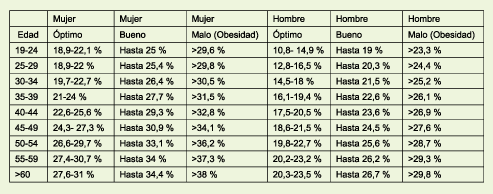

QUE ES EL IMC
El Índice de Masa Corporal (IMC) es una medida utilizada para evaluar la proporción entre el peso y la estatura de una persona. Se calcula dividiendo el peso en kilogramos por el cuadrado de la estatura en metros. El IMC proporciona una indicación general sobre si una persona tiene un peso saludable en relación con su altura, y se utiliza comúnmente como una herramienta de detección de sobrepeso y obesidad, aunque no tiene en cuenta otros factores importantes, como la distribución de grasa corporal o la composición corporal
COMO SE CALCULA
El Índice de Masa Corporal (IMC) se calcula dividiendo el peso de una persona en kilogramos por el cuadrado de su estatura en metros. La fórmula matemática es: IMC = Peso (kg) / (Estatura (m) x Estatura (m)) Por ejemplo, si una persona pesa 70 kilogramos y su estatura es de 1.75 metros, el cálculo del IMC sería: IMC = 70 kg / (1.75 m x 1.75 m) = 22.86 El resultado del cálculo del IMC se interpreta en una escala que clasifica a las personas en diferentes categorías, como infrapeso, peso normal, sobrepeso u obesidad, lo que proporciona una estimación general de su salud relacionada con el peso.
SU IMPORTANCIA ES
Calcular el Índice de Masa Corporal (IMC) en una persona es importante por varias razones: Evaluación de peso saludable: El IMC proporciona una estimación general de si una persona tiene un peso saludable en relación con su estatura. Ayuda a identificar si una persona está en riesgo de tener un bajo peso, un peso normal, sobrepeso u obesidad. Detección temprana de riesgos para la salud: El IMC se utiliza como una herramienta de detección inicial para evaluar posibles problemas de salud relacionados con el peso, como enfermedades cardiovasculares, diabetes tipo 2 y otras condiciones asociadas con la obesidad. Guía para establecer metas de peso: El IMC puede ayudar a las personas a establecer metas de peso realistas y a diseñar planes de pérdida o mantenimiento de peso de manera más informada. Seguimiento de cambios en el peso: El IMC se utiliza para evaluar los cambios en el peso corporal a lo largo del tiempo, lo que puede ser útil para monitorear el progreso en programas de pérdida de peso o de acondicionamiento físico. Es importante destacar que el IMC es una herramienta de evaluación inicial y tiene limitaciones, ya que no tiene en cuenta otros factores como la composición corporal o la distribución de grasa. Por lo tanto, se debe utilizar en combinación con otros indicadores de salud y bajo la orientación de profesionales de la salud para obtener una imagen completa de la salud de una persona.
CALCULADORA PARA MEDIR IMC
TABLA DE PORCENTAJE DE VALOR
